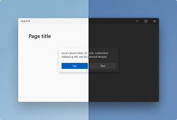
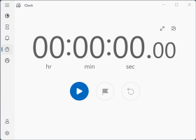
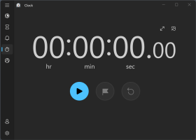
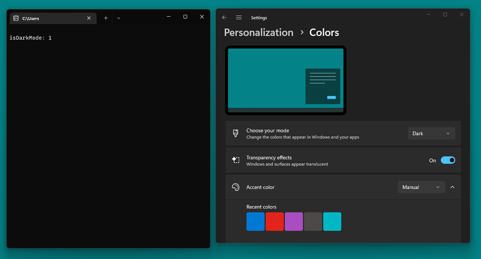
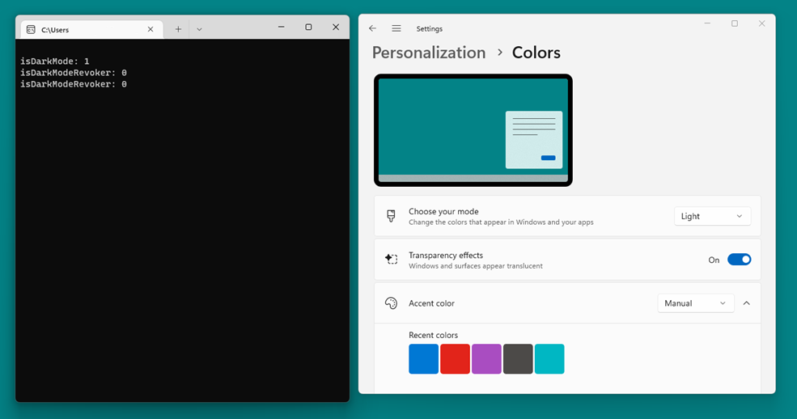
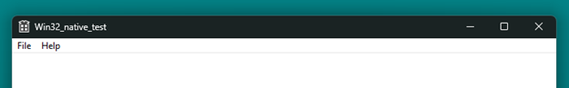

Support Dark and Light themes in Win32 apps
Windows supports Light and Dark themes as a personalization option in Windows settings. Windows uses Light mode by default, but users can choose Dark mode, which changes much of the UI to a dark color. Users might prefer this setting because it's easier on the eyes in lower-light environments, or they might simply prefer a darker interface in general. Also, darker UI colors can reduce the battery usage on some types of computer displays, such as OLED screens.

We are working hard to broaden support for Dark mode without breaking existing applications, and to that end we're providing technical guidance for updating a Win32 desktop Windows app to support both Light and Dark modes.
Dark mode vs. Light mode
The Color Mode in settings (which includes Light and Dark modes) is a setting that defines the overall foreground and background colors for the operating system and apps.
| Mode | Description | Example |
|---|---|---|
| Light | A light background with a contrasting dark foreground. In Light Mode, you will generally see black or dark text on white or light backgrounds. |
 |
| Dark | A dark background with a contrasting light foreground. In Dark mode, you will generally see white or light text on black or dark backgrounds. |
 |
Note
The reason we use "black or dark" and "white or light" is because there are additional colors such as the Accent color that can tint various foreground and background colors. So you might in fact see light blue text on a dark blue background in some parts of the UI, and that would still be considered acceptable Dark mode UI.
Due to the wide diversity of UI in different apps, the color mode, and foreground and background colors are meant as more of a directional guideline than a hard rule:
- Foreground elements, highlights, and text should be closer to the foreground color than the background color.
- Large, solid background areas and text backgrounds should generally be closer to the background color than the foreground color.
In practice, this means that in Dark mode, most of the UI will be dark, and in Light mode most of the UI will be light. The concept of a background in Windows is the large area of colors in an app, or the page color. The concept of a foreground in Windows is the text color.
Tip
If you find it confusing that the foreground color is light in Dark mode and dark in Light mode, it may help to think of the foreground color as "the default text color".
Enable support for switching color modes
There are many approaches to implementing Dark mode support in an application. Some apps contain two sets of UIs (one with a light color and one with a dark color). Some Windows UI frameworks, such as WinUI 3, automatically detect a system's theme and adjust the UI to follow the system theme. To fully support Dark mode, the entirety of an app's surface must follow the dark theme.
There are two main things you can do in your Win32 app to support both Light and Dark themes.
Know when Dark mode is enabled
Knowing when Dark mode is enabled in the system settings can help you know when to switch your app UI to a Dark mode-themed UI.
Enable a Dark mode title bar for Win32 applications
Not all Win32 applications support Dark mode, so Windows gives Win32 apps a light title bar by default. If you are prepared to support Dark mode, you can ask Windows to draw the dark title bar instead when Dark mode is enabled.
Note
This article provides examples of ways to detect system theme changes, and request a light or dark title bar for your Win32 application's window. It does not cover specifics of how to repaint and render your app UI using a Dark mode color set.
Know when Dark mode is enabled
The first step is to keep track of the color mode setting itself. This will let you adjust your application's painting and rendering code to use a Dark mode color set. Doing this requires the app to read the color setting at startup and to know when the color setting changes during an app session.
To do this in a Win32 application, use Windows::UI::Color and detect if a color can be classified as light or dark. To use Windows::UI::Color, you need to import (in pch.h) the Windows.UI.ViewManagement header from winrt.
#include <winrt/Windows.UI.ViewManagement.h>
Also include that namespace in main.cpp.
using namespace Windows::UI::ViewManagement;
In main.cpp, use this function to detect if a color can be classified as light.
inline bool IsColorLight(Windows::UI::Color& clr)
{
return (((5 * clr.G) + (2 * clr.R) + clr.B) > (8 * 128));
}
This function performs a quick calculation of the perceived brightness of a color, and takes into consideration ways that different channels in an RGB color value contribute to how bright it looks to the human eye. It uses all-integer math for speed on typical CPUs.
Note
This is not a model for real analysis of color brightness. It is good for quick calculations that require you to determine if a color can be classified as light or dark. Theme colors can often be light but not pure white, or dark but not pure black.
Now that you have a function to check whether a color is light, you can use that function to detect if Dark mode is enabled.
Dark mode is defined as a dark background with a contrasting light foreground. Since IsColorLight checks if a color is considered light, you can use that function to see if the foreground is light. If the foreground is light, then Dark mode is enabled.
To do this, you need to get the UI color type of the foreground from the system settings. Use this code in main.cpp.
auto settings = UISettings();
auto foreground = settings.GetColorValue(UIColorType::Foreground);
UISettings gets all the settings of the UI including color. Call UISettings.GetColorValue(UIColorType::Foreground) to get the foreground color value from the UI settings.
Now you can run a check to see if the foreground is considered light (in main.cpp).
bool isDarkMode = static_cast<bool>(IsColorLight(foreground));
wprintf(L"\nisDarkMode: %u\n", isDarkMode);
- If the foreground is light, then
isDarkModewill evaluate to 1 (true) meaning Dark mode is enabled. - If the foreground is dark, then
isDarkModewill evaluate to 0 (false) meaning Dark mode is not enabled.
To automatically track when the Dark mode setting changes during an app session, you can wrap your checks like this.
auto revoker = settings.ColorValuesChanged([settings](auto&&...)
{
auto foregroundRevoker = settings.GetColorValue(UIColorType::Foreground);
bool isDarkModeRevoker = static_cast<bool>(IsColorLight(foregroundRevoker));
wprintf(L"isDarkModeRevoker: %d\n", isDarkModeRevoker);
});
Your full code should look like this.
inline bool IsColorLight(Windows::UI::Color& clr)
{
return (((5 * clr.G) + (2 * clr.R) + clr.B) > (8 * 128));
}
int main()
{
init_apartment();
auto settings = UISettings();
auto foreground = settings.GetColorValue(UIColorType::Foreground);
bool isDarkMode = static_cast<bool>(IsColorLight(foreground));
wprintf(L"\nisDarkMode: %u\n", isDarkMode);
auto revoker = settings.ColorValuesChanged([settings](auto&&...)
{
auto foregroundRevoker = settings.GetColorValue(UIColorType::Foreground);
bool isDarkModeRevoker = static_cast<bool>(IsColorLight(foregroundRevoker));
wprintf(L"isDarkModeRevoker: %d\n", isDarkModeRevoker);
});
static bool s_go = true;
while (s_go)
{
Sleep(50);
}
}
When this code is run:
If Dark mode is enabled, isDarkMode will evaluate to 1.

Changing the setting from Dark mode to Light mode will make isDarkModeRevoker evaluate to 0.

Enable a Dark mode title bar for Win32 applications
Windows doesn't know if an application can support Dark mode, so it assumes that it can't for backwards compatibility reasons. Some Windows development frameworks, such as Windows App SDK, support Dark mode natively and change certain UI elements without any additional code. Win32 apps often don't support Dark mode, so Windows gives Win32 apps a light title bar by default.
However, for any app that uses the standard Windows title bar, you can enable the dark version of the title bar when the system is in Dark mode. To enable the dark title bar, call a Desktop Windows Manager (DWM) function called DwmSetWindowAttribute on your top-level window, using the window attribute DWMWA_USE_IMMERSIVE_DARK_MODE. (DWM renders attributes for a window.)
The following examples assume you have a window with with a standard title bar, like the one created by this code.
BOOL InitInstance(HINSTANCE hInstance, int nCmdShow)
{
hInst = hInstance; // Store instance handle in our global variable
HWND hWnd = CreateWindowW(szWindowClass, szTitle, WS_OVERLAPPEDWINDOW,CW_USEDEFAULT, 0,
CW_USEDEFAULT, 0, nullptr, nullptr, hInstance, nullptr);
if (!hWnd)
{
return FALSE;
}
ShowWindow(hWnd, nCmdShow);
UpdateWindow(hWnd);
return TRUE;
}
First, you need to import the DWM API, like this.
#include <dwmapi.h>
Then, define the DWMWA_USE_IMMERSIVE_DARK_MODE macros above your InitInstance function.
#ifndef DWMWA_USE_IMMERSIVE_DARK_MODE
#define DWMWA_USE_IMMERSIVE_DARK_MODE 20
#endif
BOOL InitInstance(HINSTANCE hInstance, int nCmdShow)
{
…
Finally, you can use the DWM API to set the title bar to use a dark color. Here, you create a BOOL called value and set it to TRUE. This BOOL is used to trigger this Windows attribute setting. Then, you use DwmSetWindowAttribute to change the window attribute to use Dark mode colors.
BOOL value = TRUE;
::DwmSetWindowAttribute(hWnd, DWMWA_USE_IMMERSIVE_DARK_MODE, &value, sizeof(value));
Here's more explanation of what this call does.
The syntax block for DwmSetWindowAttribute looks like this.
HRESULT DwmSetWindowAttribute(
HWND hwnd,
DWORD dwAttribute,
[in] LPCVOID pvAttribute,
DWORD cbAttribute
);
After passing hWnd (the handle to the window you want to change) as your first parameter, you need to pass in DWMWA_USE_IMMERSIVE_DARK_MODE as the dwAttribute parameter. This is a constant in the DWM API that lets the Windows frame be drawn in Dark mode colors when the Dark mode system setting is enabled. If you switch to Light mode, you will have to change DWMWA_USE_IMMERSIVE_DARK_MODE from 20 to 0 for the title bar to be drawn in light mode colors.
The pvAttribute parameter points to a value of type BOOL (which is why you made the BOOL value earlier). You need pvAttribute to be TRUE to honor Dark mode for the window. If pvAttribute is FALSE, the window will use Light Mode.
Lastly, cbAttribute needs to have the size of the attribute being set in pvAttribute. To do easily do this, we pass in sizeof(value).
Your code to draw a dark windows title bar should look like this.
#ifndef DWMWA_USE_IMMERSIVE_DARK_MODE
#define DWMWA_USE_IMMERSIVE_DARK_MODE 20
#endif
BOOL InitInstance(HINSTANCE hInstance, int nCmdShow)
{
hInst = hInstance; // Store instance handle in our global variable
HWND hWnd = CreateWindowW(szWindowClass, szTitle, WS_OVERLAPPEDWINDOW,
CW_USEDEFAULT, 0, CW_USEDEFAULT, 0, nullptr, nullptr, hInstance, nullptr);
BOOL value = TRUE;
::DwmSetWindowAttribute(hWnd, DWMWA_USE_IMMERSIVE_DARK_MODE, &value, sizeof(value));
if (!hWnd)
{
return FALSE;
}
ShowWindow(hWnd, nCmdShow);
UpdateWindow(hWnd);
return TRUE;
}
When this code is run, the app title bar should be dark:
